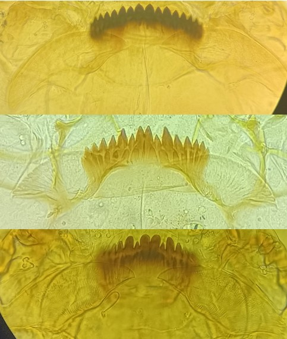
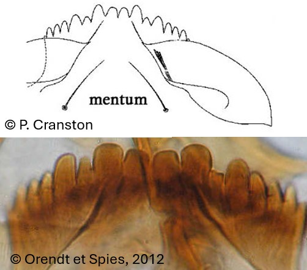

Tribu des Chironomini
Mentum convexe, plaques ventromentales courbes, dents les plus externes du mentum ne forment pas un groupe distinct, deux dents médianes, pas de dent dorsale a la mandibule


2 dents centrales parfois plus grande que la 1ère paire de dent latérale. Mentum peu large et plutôt
plat.
Prémandibules avec 3 dents
4 dents centrales de même taille. Les plaques ventromentales remontent presque sur les dents du
mentum.
Prémandibules avec 2 dents. Genre rare en Europe